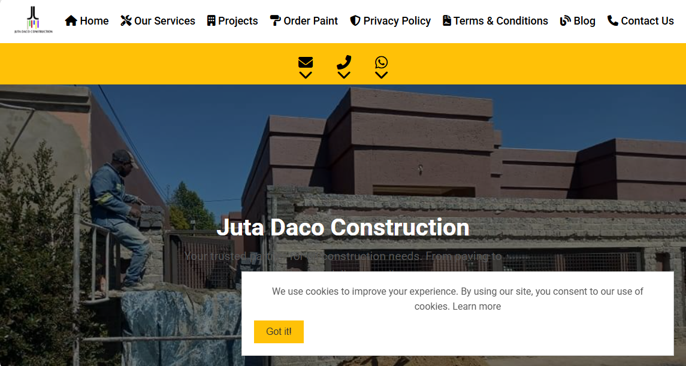

Platform
PlatformIndividual
Personal Brand Growth Platform
A conversion-focused personal authority system with automated lead qualification and consultation booking.
View Case Study →Case studies spanning individual operators, SMBs, enterprise organizations, and government institutions.
Discuss Your ProgramRevenue and authority platforms for independent professionals.
PlatformIndividual
A conversion-focused personal authority system with automated lead qualification and consultation booking.
View Case Study → System
SystemIndividual
An editorial and audience growth system that turns expert content into measurable pipeline activity.
View Case Study →Operational software for lean teams scaling service delivery.
 System
SystemSmall Business
Digitized booking, dispatch, and technician reporting for reliable field execution.
View Case Study → Platform
PlatformSmall Business
A throughput and queue optimization solution for customer-centric service centers.
View Case Study → System
SystemSmall Business
A trusted booking ecosystem with provider verification and payment orchestration.
View Case Study → Platform
PlatformSmall Business
A secure admissions and parent communication solution for early learning centers.
View Case Study → System
SystemSmall Business
Route intelligence and safety workflows for student transport operations.
View Case Study → System
SystemSmall Business
A quote-to-delivery operations platform for high-volume event teams.
View Case Study → Platform
PlatformSmall Business
A centralized communication and participation system for community organizations.
View Case Study →Commercial and operational systems designed for expansion.

PlatformGrowing Business
A command-center system for milestone control, procurement visibility, and project risk governance.
View Case Study → System
SystemGrowing Business
An integrated operational layer connecting reservations, tables, and POS performance.
View Case Study → Platform
PlatformGrowing Business
A commerce system for inventory, finance workflows, and rental conversion optimization.
View Case Study →High-governance platforms for complex, data-intensive organizations.
 Platform
PlatformEnterprise
A decision system converting weather signals into risk alerts and resilience planning.
View Case Study → Platform
PlatformEnterprise
A SaaS workforce development system for compliance, onboarding, and capability analytics.
View Case Study →Mission-critical public systems for security, transparency, and service accountability.